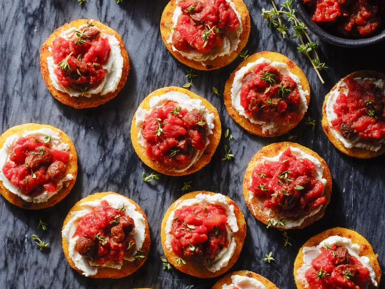

Crispy Polenta Bites With Jammy Tomato Topper

Ingredients
- 1 (28ounce) can diced tomatoes, drained
- 1/3 cup raisins
- 1/4 cup dry red wine (such as Cabernet Sauvignon or Merlot)
- 1 teaspoon honey
- 1 teaspoon balsamic vinegar
- 1 teaspoon chopped fresh thyme, plus more for garnish
- 1/4 teaspoon salt
- 1 (16 ounce) tube refigerated cooked polenta
- 1 tablespoon oliver oil
- 1 (4-ounce) package goat cheese (chèvre), crumbled
Directions
- Put rimmed baking sheet in oven. Preheat the oven to 450 degrees F (230 degrees C).
- Bring tomatoes, raisins, and red wine to a boil in a medium saucepan over medium-high heat. Reduce heat to low; simmer mixture, uncovered, until raisins are plump and most of liquid has evaporated, about 20 minutes. Remove from heat. Stir in honey, vinegar, thyme, and salt.
- Meanwhile, slice polenta into 1/4-inch-thick rounds. Gently toss polenta with oil in a large bowl. Remove baking sheet from oven. Arrange rounds in an even layer on baking sheet.
- Bake polenta rounds in the preheated oven, turning halfway through, until lightly golden and crisp on both sides, about 15 minutes.
- To serve, top polenta rounds with goat cheese and tomato mixture. Garnish with thyme. Serve warm or at room temperature.